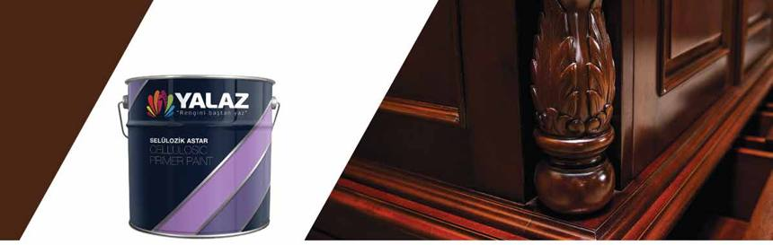
Целлюлозная грунтовка
Нитроцеллюлозная грунтовка для мебельных поверхностей. Обеспечивает надёжное сцепление финишного покрытия с основой, выравнивает пористость дерева и MDF. Формирует прочную однородную подложку.
Профессиональные лакокрасочные материалы для мебельного производства и реставрации — целлюлозные, полиуретановые и акриловые системы YALAZ

Нитроцеллюлозная грунтовка для мебельных поверхностей. Обеспечивает надёжное сцепление финишного покрытия с основой, выравнивает пористость дерева и MDF. Формирует прочную однородную подложку.
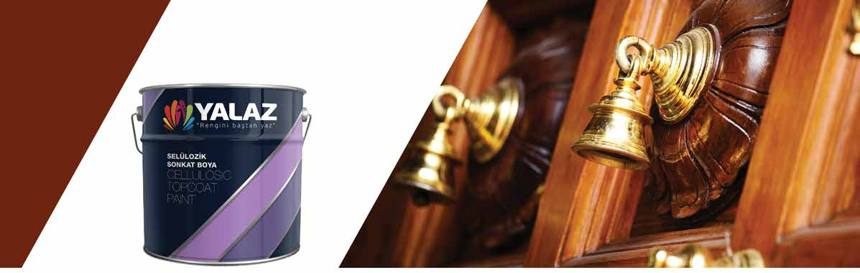
Финишная нитроцеллюлозная краска для мебели с высокой укрывистостью. Образует гладкое, равномерное покрытие с отличными декоративными характеристиками. Быстро сохнет, легко полируется.
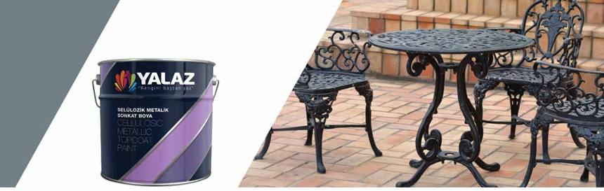
Нитроцеллюлозная краска с алюминиевым пигментом, создающая эффект металлического блеска. Обеспечивает изысканный декоративный вид мебельных поверхностей, устойчива к истиранию.
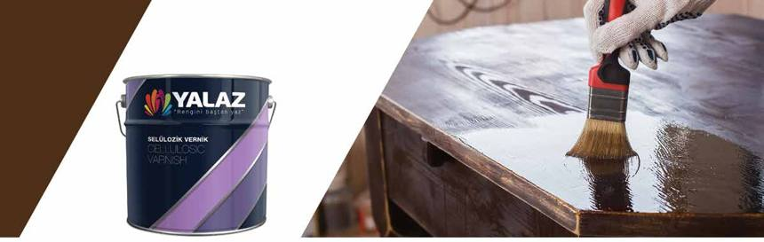
Прозрачный нитроцеллюлозный лак для финишной защиты мебельных поверхностей. Выпускается в трёх степенях блеска: глянцевый (Glossy), шёлково-матовый (Silk Matt) и матовый (Matt). Быстросохнущий, хорошо полируется.
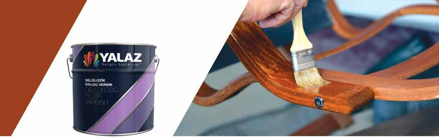
Специальный наполняющий лак на нитроцеллюлозной основе с повышенным сухим остатком. Заполняет поры древесины, создавая идеально гладкую поверхность под финишное покрытие. Сокращает количество слоёв.
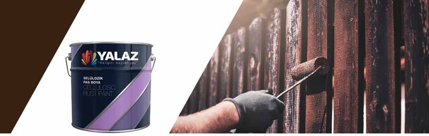
Декоративная нитроцеллюлозная краска, имитирующая эффект состаренного металла с патиной ржавчины. Создаёт уникальную текстурную поверхность в стиле лофт и индастриал.
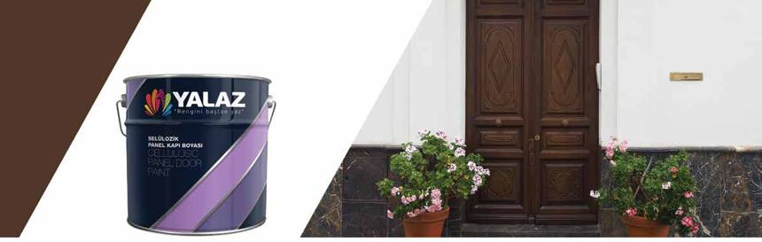
Специально разработанная нитроцеллюлозная краска для окраски панельных дверей. Обладает высокой укрывистостью и эластичностью, не растрескивается в стыках панелей при температурных колебаниях.
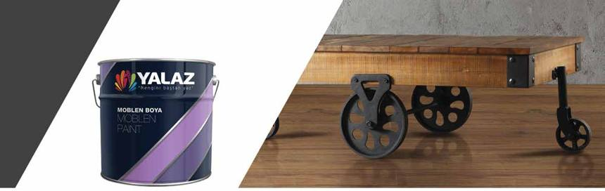
Специализированная краска с отличной адгезией к полипропилену и другим трудноокрашиваемым пластикам без предварительного грунтования. Гибкая плёнка устойчива к ударам и царапинам.
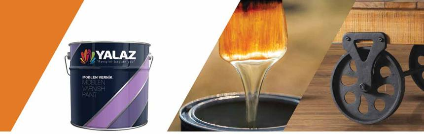
Прозрачный защитный лак для полипропиленовых и пластиковых поверхностей. Повышает стойкость к истиранию, химическому воздействию и УФ-излучению. Сохраняет первоначальный вид изделия.
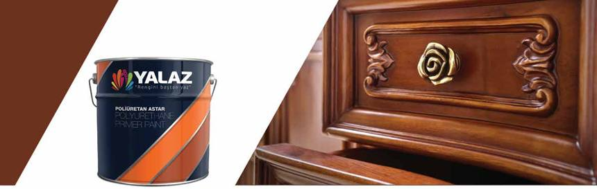
Двухкомпонентная полиуретановая грунтовка с высокой адгезией к различным основаниям. Обеспечивает надёжную подложку для полиуретановых финишных материалов, обладает отличными наполняющими свойствами.
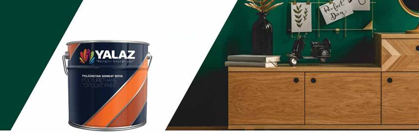
Двухкомпонентная полиуретановая краска с превосходными декоративными и защитными свойствами. Образует твёрдую, химически стойкую плёнку с ровным насыщенным цветом. Устойчива к бытовым химикатам и механическому воздействию.
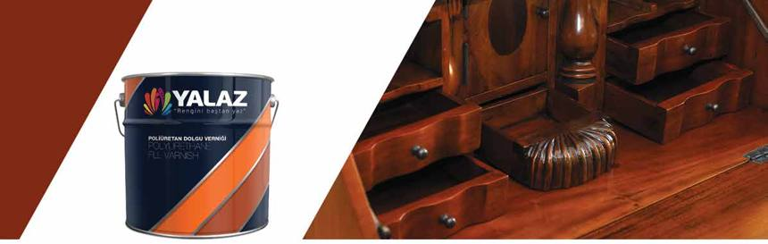
Двухкомпонентный полиуретановый наполнитель с высоким содержанием сухого остатка (до 65%). Эффективно заполняет поры и микронеровности, создавая идеальную основу под финишный полиуретановый лак.
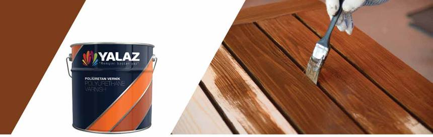
Двухкомпонентный полиуретановый лак, обеспечивающий максимальную защиту и долговечность. Выпускается в трёх степенях блеска: матовый (Matt), глянцевый (Glossy) и шёлково-матовый (Silk Matt). Устойчив к воде, растворителям и бытовой химии.
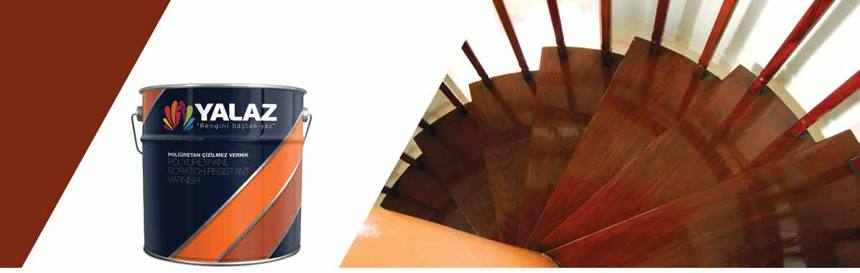
Специальный двухкомпонентный лак с усиленной устойчивостью к царапинам и истиранию. Содержит специальные добавки, повышающие твёрдость плёнки по Vickers до уровня защитных покрытий для паркета. Идеален для поверхностей с интенсивным использованием.
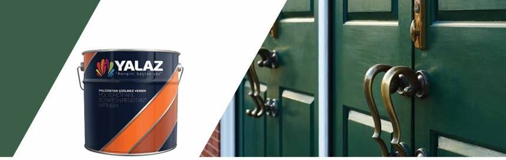
Двухкомпонентная полиуретановая краска с повышенной эластичностью, разработанная специально для покраски панельных дверей. Не трескается и не шелушится в местах стыков панелей. Обеспечивает долговечное декоративное покрытие.
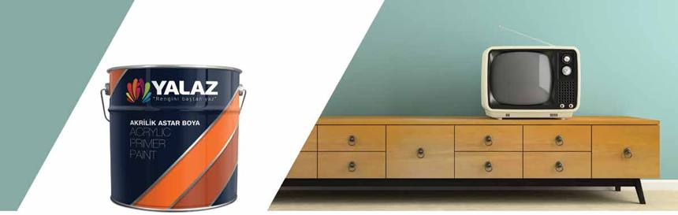
Водоразбавляемая акриловая грунтовка для мебельных поверхностей. Отличная адгезия, минимальный запах, быстрое высыхание. Экологически безопасна, сертифицирована для применения в детских помещениях.
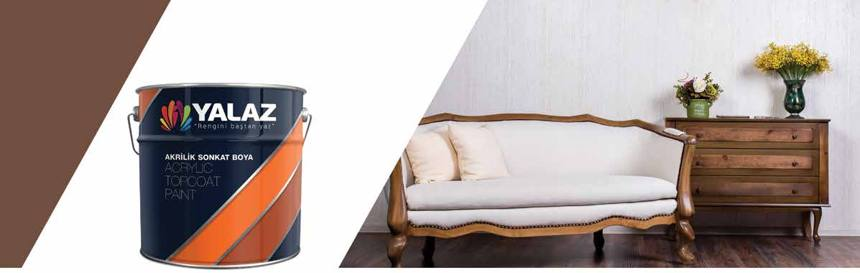
Водоразбавляемая акриловая финишная краска для мебели и деревянных изделий. Насыщенный цвет, высокая укрывистость, устойчивость к мытью и бытовым загрязнениям. Не желтеет со временем.
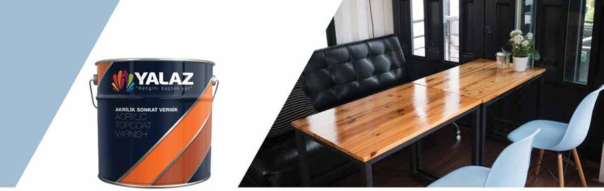
Прозрачный водоразбавляемый акриловый лак для финишной защиты мебельных поверхностей. Обеспечивает надёжную защиту от влаги, бытовых загрязнений и УФ-излучения. Не изменяет натуральный цвет древесины.